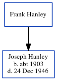

Frank Hanley
[ Home ] | [ Calendar ] | [ Surnames Index ] | [ Census Index ] | [ Family History ]Frank Hanley andhad 1 child, Joseph Chartrand.
Children
- Joseph Chartrand was born c. 1903
Family Tree
Generated by ged2site. Last updated on Jun 6, 2024